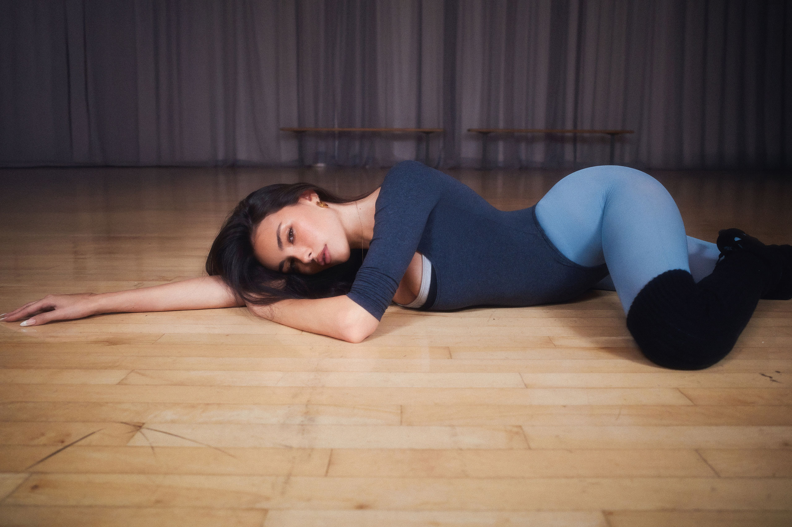

Madison Elle Beer is an American singer, songwriter, and producer. Born in New York, she gained early recognition for her vocal talent and has since evolved into a versatile artist known for her cinematic pop sound and introspective songwriting.
Disclaimer: This is a conceptual fan-made portfolio project. This website is not affiliated with, endorsed by, or sponsored by Madison Beer or her management. All rights to audio and visual content belong to their respective owners.